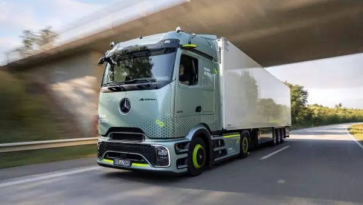

Recharge de camion sur votre dépôt: comment l'aborder

Le camion électrique n'est plus une musique d'avenir. Des constructeurs tels que Volvo, Scania, DAF, MAN et Mercedes-Benz (Daimler Trucks) proposent de plus en plus de modèles avec des capacités de batterie de 200 à plus de 500 kWh et des autonomies dépassant les 500 km. Mais acheter un camion électrique est une chose — le faire charger de manière fiable sur la route chaque jour en est une autre.
La recharge de camions sur un dépôt impose des exigences fondamentalement différentes de la recharge de voitures particulières ou de camionnettes. Il s'agit de puissances beaucoup plus élevées, de fenêtres de recharge plus courtes et d'une opération qui ne tolère aucun retard. Dans cet article, Powerland explique comment préparer votre dépôt pour la recharge de camions électriques — du choix entre DC et AC au rôle du stockage par batterie, de la planification des trajets et du phasage.
DC ou AC : quand avez-vous besoin de quel type de chargeur ?
Le réflexe avec la recharge de camions électriques est souvent "nous avons besoin de chargeurs rapides DC". C'est vrai dans de nombreux cas, mais pas toujours. Le bon choix dépend de votre opération.
Quand l'AC est suffisant
La recharge AC (typiquement 11 à 22 kW par point de recharge) fonctionne bien pour les véhicules avec de longs temps d'arrêt. Les camionnettes qui reviennent le soir et repartent le matin ont huit à dix heures pour charger — plus que suffisant pour l'AC. La puissance par point de recharge est faible, le matériel est moins cher et la connexion réseau est moins sollicitée. Pour une flotte de véhicules utilitaires légers avec des itinéraires fixes et des temps d'arrêt prévisibles, l'AC sur le dépôt est souvent la stratégie de base la plus intelligente et la moins chère.
Quand le DC devient indispensable
Avec les camions, l'image change. Charger un camion électrique avec une batterie de 400 kWh sur 22 kW AC prend plus de 18 heures — ce n'est pas une option si le véhicule doit reprendre la route le matin. La charge rapide DC avec des puissances de 150 à 375 kW réduit ce temps de charge à une heure et demie à trois heures.
Le DC devient indispensable dès que vous travaillez avec des camions ayant un kilométrage quotidien élevé, des fenêtres de départ serrées, une recharge intermédiaire entre les trajets ou les équipes, ou plusieurs camions qui doivent être chargés dans une courte fenêtre de temps. Dans ces scénarios, l'AC n'est pas un complément mais un goulot d'étranglement.
Le mélange est souvent la solution
Sur de nombreux sites logistiques, la configuration idéale est un mélange des deux. DC pour les camions et les véhicules avec des rotations serrées. AC pour les camionnettes, les voitures en pool et les véhicules avec suffisamment de charge nocturne. Ce mélange économise de la puissance — et donc de l'argent — car vous n'avez pas besoin de dimensionner chaque point de recharge pour une puissance maximale.
Le problème de puissance : pourquoi la recharge de camions défie votre connexion réseau
C'est là que se situe le véritable goulot d'étranglement. Un seul chargeur rapide DC de 300 kW consomme autant d'énergie que des dizaines de ménages réunis. Ajoutez-y trois ou quatre camions qui chargent simultanément et vous atteignez rapidement des puissances que la connexion réseau existante d'un dépôt ne peut pas supporter.
De plus, cette puissance de charge s'ajoute à la consommation existante de votre site : refroidissement, CVC, éclairage, chariots élévateurs, bandes transporteuses. Aux moments de pointe — changements d'équipe, vagues d'arrivée, charge et refroidissement simultanés — la demande de puissance totale peut être considérablement plus élevée que celle pour laquelle votre connexion est prévue.
Le renforcement du réseau est la solution classique, mais dans la pratique, cela prend du temps (en Belgique huit à seize semaines pour une nouvelle connexion haute puissance via Fluvius, plus longtemps dans les zones de congestion) et de l'argent. Tous les sites ne peuvent pas ou ne veulent pas attendre cela.
Le stockage par batterie comme catalyseur pour la recharge de camions
C'est là que le stockage par batterie fait la différence. Une batterie sur votre site fonctionne comme un tampon entre le réseau et votre infrastructure de recharge. Le principe est simple : la batterie se charge en continu à partir du réseau à la puissance disponible — également la nuit, également aux moments où la consommation est faible. Dès que les camions doivent être chargés, la batterie fournit la puissance de pointe que le réseau seul ne peut pas fournir.
Concrètement, cela signifie que vous pouvez offrir une charge rapide DC sur une connexion réseau qui est en réalité trop petite pour cela. Un chargeur rapide de 300 kW peut fonctionner sur une connexion réseau de 100 kW lorsqu'une batterie comble la différence. Cela permet non seulement d'économiser sur les coûts de connexion — mais rend la recharge de camions réalisable à court terme sans attendre le renforcement du réseau.
En outre, la batterie fait de l'écrêtement des pointes : en aplatissant les pics, vous payez des tarifs de capacité plus bas. Et en combinaison avec des panneaux solaires sur le toit, la batterie stocke l'énergie produite pendant la journée que vous utilisez pour la recharge la nuit ou pendant les pics.
Votre planification des trajets comme base pour le parc de recharge
Une erreur courante avec la recharge de camions est de concevoir sur la base du nombre de véhicules plutôt que de l'opération. Dix camions ne signifient pas automatiquement dix chargeurs DC. Ce qui compte, c'est quand chaque véhicule part, de combien d'énergie il a besoin et de combien de temps il dispose pour charger.
Un camion qui part à 05h00 et revient à 20h00 a toute la nuit pour charger — peut-être à puissance inférieure. Un camion qui arrive à 14h00 et doit repartir à 17h00 a trois heures et a besoin de DC. Un camion qui effectue deux trajets par jour avec une heure d'intervalle a besoin d'un complément rapide.
En prenant la planification des trajets comme point de départ, vous déterminez par véhicule la stratégie de charge : combien de kW sont nécessaires, quand et pendant combien de temps. Cela détermine ensuite le mélange de DC et d'AC, la puissance simultanée totale, la capacité du tampon batterie et le dimensionnement de votre connexion réseau. Concevoir à partir de la planification des trajets évite de surinvestir dans de la puissance dont vous n'avez pas besoin — ou de sous-investir, ce qui bloquerait votre planning.
Conception physique : un parc de recharge pour camions n'est pas un parking avec des chargeurs
Les camions manœuvrent différemment des camionnettes. Ils sont plus longs, tournent plus large et ont besoin de plus d'espace pour s'approcher, tourner et sortir. Un parc de recharge conçu pour les voitures particulières ne fonctionne pas pour une flotte de porteurs de 18 tonnes.
La recharge de camions nécessite une disposition avec des voies de circulation logiques, un espace de manœuvre suffisant, une séparation claire entre les zones de recharge, les zones d'attente et les zones piétonnes, et un positionnement des points de recharge qui correspond aux dimensions et aux rayons de braquage de vos véhicules. La gestion des câbles est particulièrement importante avec les camions : des câbles plus longs, des puissances plus élevées et des connecteurs plus lourds nécessitent une configuration réfléchie.
La protection contre les chocs n'est pas un luxe mais une nécessité. Un chargeur DC valant des dizaines de milliers d'euros heurté par un camion qui recule est un problème coûteux et évitable.
Phasage : commencez par ce dont vous avez besoin, préparez-vous pour ce qui vient
La plupart des entreprises de transport n'électrifient pas leur flotte entière en une seule fois. Vous commencez avec deux ou trois camions électriques et vous montez en puissance à mesure que la flotte grandit, que les contrats expirent et que la technologie se développe.
Cela nécessite une conception par phases. Dans la première phase, vous installez les chargeurs dont vous avez besoin maintenant, mais vous prévoyez déjà les chemins de câbles, les tableaux de distribution et l'espace pour la phase suivante. Vous dimensionnez la connexion réseau — ou le tampon batterie — non seulement pour la flotte actuelle mais pour la trajectoire de croissance des trois à cinq prochaines années. Vous posez des conduits et des provisions pour les futures lignes DC.
Cela coûte un peu plus cher dans la première phase, mais cela économise beaucoup plus tard. Rouvrir, tirer des câbles et remplacer des tableaux est plus coûteux et plus perturbateur que de le faire correctement en une seule fois.
Un exemple concret : si vous savez que votre flotte va doubler dans deux ans, installez dès maintenant le câblage et la capacité du tableau de distribution pour le nombre total de points de recharge. Les chargeurs eux-mêmes, vous ne les installez que lorsque vous en avez besoin. Ainsi, vous ne payez le matériel qu'à l'utilisation, mais vous évitez les travaux de terrassement et de câblage plus coûteux ultérieurement.
MCS : la prochaine étape dans la recharge de camions
La norme actuelle pour la charge rapide DC avec les camions est CCS2, avec une puissance allant jusqu'à 350-375 kW. Mais le secteur se prépare pour MCS — le Megawatt Charging System — qui permet une puissance de charge allant jusqu'à 750 kW et plus. Des constructeurs comme Scania ont déjà annoncé le support MCS pour 2026.
MCS deviendra particulièrement pertinent pour les camions longue distance qui doivent se recharger au maximum pendant de courtes pauses. Pour les dépôts qui conçoivent un parc de recharge maintenant, il est sage d'en tenir compte dans la préparation spatiale et électrique — même si vous n'installez des chargeurs MCS que dans quelques années. Les sections de câbles, le refroidissement et la capacité du tableau de distribution pour les puissances MCS sont considérablement plus lourds que pour CCS2.
Le rôle des panneaux solaires sur les toits logistiques
Les sites logistiques ont souvent de grandes surfaces de toit plates — idéales pour les panneaux solaires. La combinaison avec la recharge de camions est logique : l'énergie produite pendant la journée peut aller directement à l'infrastructure de recharge ou au tampon batterie.
Le calcul est simple. Chaque kWh que vous produisez vous-même et utilisez ou stockez sur place est un kWh que vous ne prenez pas sur le réseau. Sur un grand toit d'entrepôt, cela peut représenter des volumes considérables. En combinaison avec un EMS qui aligne la production, la consommation, le stockage et la charge, le PV réduit structurellement le coût par kWh de votre recharge de camions.
Résumé : par où commencer ?
La recharge de camions sur un dépôt n'est pas une question de commander et de connecter des chargeurs. C'est un projet énergétique qui commence par votre opération : votre flotte, votre planification des trajets, votre site, vos plans de croissance. À partir de là, vous déterminez la stratégie de charge (DC, AC ou mixte), les besoins en puissance, le rôle du stockage par batterie et du PV, la disposition physique et le phasage.
Plus vous commencez ce processus tôt — même si vos premiers camions électriques n'ont pas encore été commandés — mieux vous serez préparé quand le moment viendra.
Prêt à préparer votre dépôt pour la recharge de camions ?
{kind=link}